一、站点信息
1、功能说明
站点信息主要显示对应所在集团或公司的直属站点信息，查阅站点基础为主。
2、搜索说明
搜索主要针对多品牌多站点的情况下使用，可根据时间、站点ID、站点名称及状态进行查询，目前仅支持精准搜索。
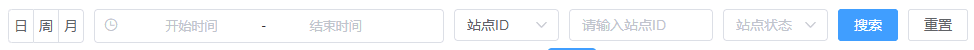
3、页面说明
除站点基础信息外，较为重要的信息如下：
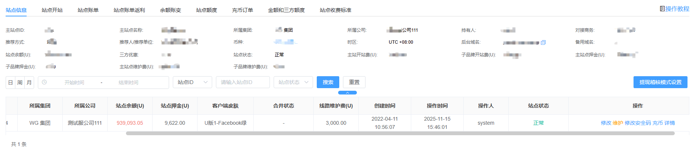
(1) 站点状态：暂分5种，以下是状态说明
- 正常：即正常操作，可以访问后台、前台
- 维护：即前台不允许登录，后台可登录
- 冻结：即前台可以登录， 后台账号登录则提示“该站点已被冻结” 该状态为上级进行操作
- 注销待集团审：该状态 平台是正常运营，前台和后台都可以登录
- 注销：即前台和后台都不可以登录，注销之后，不可以恢复，请谨慎处理
(2) 操作说明：请仔细阅读以下操作说明简述
- 修改：编辑站点的信息（目前只支持 客户端皮肤，语言设置，后台登录地址、IP白名单和备注编辑，其他的信息不允许编辑）
- 访问后台：即跳转到对应的后台登录地址
- 详情：即可以查看站点信息
- 注销：申请注销流程为：下级提交申请---上级集团审核
- 维护：开启和关闭维护，对应的站点状态的维护中和正常
- 修改安全码：该安全码只能在个该站点的所属管理员登录，且没有设置的时候可见，在设置完成之后，安全码则不显示
(3) 维护说明：对站点进行开启/停止维护。
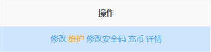
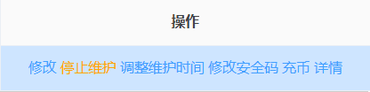
(4) 提现稽核模式设置：
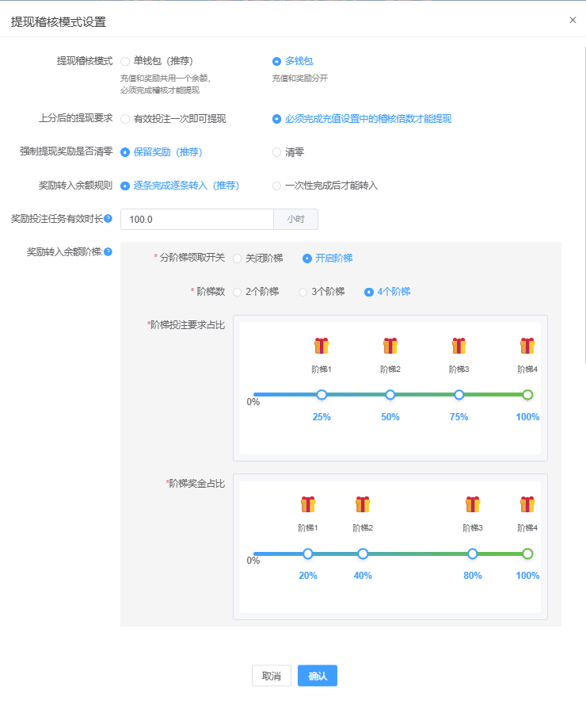
- 提现稽核模式：分为单钱包及多钱包模式
- 单钱包：即余额钱包，充值的金额的进入余额钱包，当前余额即可提现余额；
- 多钱包：即余额钱包与奖励钱包同时独立存在，任务及活动相关额奖励金额进入奖励钱包，充值金额进入余额钱包；
- 上分后的提现要求：
- 有效投注一次即可提现(默认)：充值稽核倍数依然有效，但充值产生的是"奖励"投注任务，不影响会员提现。要求自最后一次充值后必须进行一次有效投注。
- 必须完成充值设置中的稽核倍数才能提现：按充值设置中的稽核倍数生成“必须稽核”类型的投注任务，必须打完要求的流水，余额钱包中金额才能提现。
- 强制提现奖励清零：若有投注任务未完成，则客户端的按钮是强制提现，提现成功会放弃所有未领取奖励。
- 奖励转入余额规则：
- 逐条完成逐条转入：完成一条奖励任务，即可转出此条相对应奖金。
- 一次性完成后才能转入：必须完成所有的稽核任务，才能将对应的奖金转入到可提现余额。
- 奖励投注任务有效时长：可对奖励投注任务设置有效时长（单位/小时），会员必须在有效时长内完成投注要求，才能将对应奖励金额转入到可提现余额，否则将视为放弃，奖励将在超时后自动清零。
- 奖励转入余额阶梯：“逐条完成逐条转入”规则下可将领取奖励的投注任务设置为多个阶梯，会员完成该阶梯的投注要求，即可将该阶梯对应的奖金转入到可提现余额。
二、站点审核
（1）功能说明：该模块显示的站点审核状态显示用于管理员审核站点变动
（2）搜索说明：可通过选项或文字搜索出对应账号（仅支持精准搜索）
（3）页面说明：由于站点状态不同，具体操作对应不同，请看下图便于区分
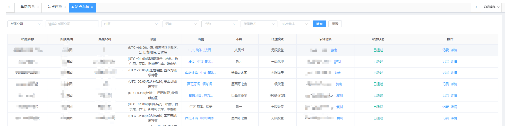
（4）站点状态&操作：均可点击查看对应站点详情
站点建立中：仅能查看对应详情
正常/冻结：对该站点进行冻结/解冻操作
注销待集团审核：可对下级公司进行审核通过/拒绝
注销：可查看对应记录
三、开始审核
（1）开站说明：集团/公司申请开通站点直接通知我方技术支持进行审核
（2）新增站点：若需要为下级新增站点，可参考下图进行填写操作
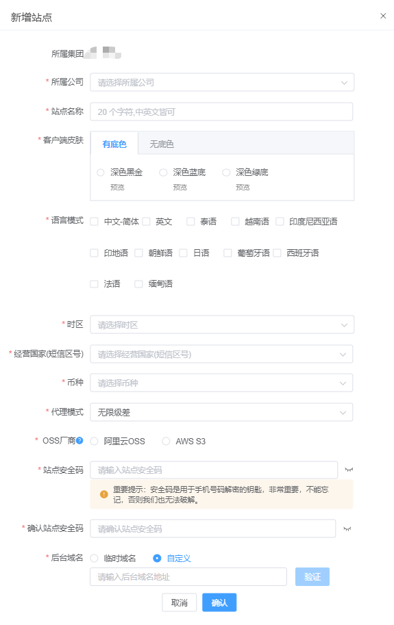
温馨提示：保存提交后，耐心等待审核，通过后即可获得对应站点的管理后台进行配置，可在站点信息页面查看开站进度!
（3）页面说明：可参考【站点审核】 - 【站点状态&操作】说明即可
四、站点开站
1、模块说明：站点可以额外新增主站点或子品牌
前提条件 :
(1)、业主拥有自己的集团后台及公司后台且集团后台余额满足开站需求
(2)、主站为单币种站点
识别方式：通过域名识别，访问不同域名时，品牌还是一样，即通过访问的域名入口就能知晓所在站点，尽量实现无痛合并
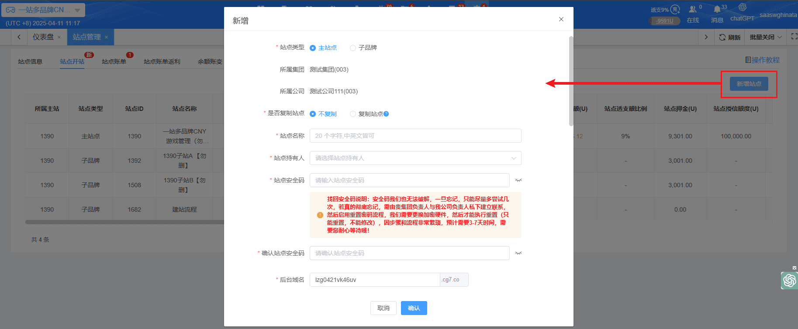
新增完毕后，会进入付款阶段。
您可以选择 :
(1) 立即充币支付 : 页面会引导至支付页面，依照页面支付资讯付款即可。
( 立即充币可以多笔充值，充多的金额会直接加在主站余额里，这些充值的钱都会享受充值优惠。)
(2) 从主站点扣款 : 若主站余额充足，可直接从主站站点扣款支付。
正确付款完成后，系统将会开始建站
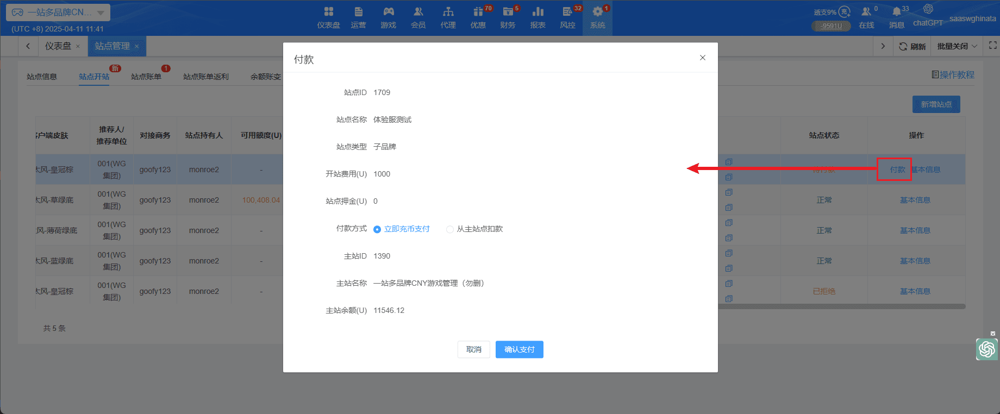
点击进度，可以查看目前品牌的开站进度
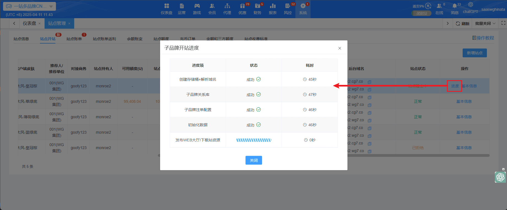
站点状态为配置中，代表已经建立完毕，等待运营同意即可
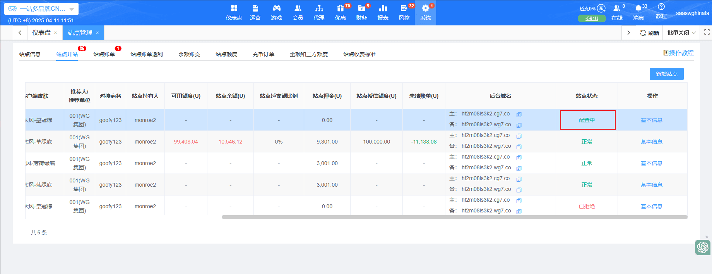
2、子站介绍：
(1）子站入口 : 子站点作为一个单独的站点没有单独的后台，与主站点公用一个后台（权限配置公用）
（2）子站维护冻结 : 子站有单独的维护和冻结功能，互不影响
①子站维护，主站不维护
主站维护，子站不维护
②主站冻结，子站冻结
子站冻结，主站不冻结
（3）系统 : 后台账号、账号权限、IP白名单、后台日志、非经营性访问限制、币种管理都与主站公用配置
（4）会员 : 主站会员与子站会员单独存在，所以可以存在相同的会员账号
(5) 域名、app : 子站点作为单独站点，存在单独的大厅、app、下载站
(6) 同一个会员信息可以分别存在于站点中两个不同的品牌，且信息不共用
3、于站点中新增子站时，可独立部份设置或搜寻子站功能： 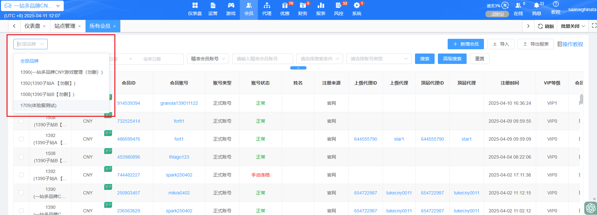
例如 : 会员管理中，可直接搜寻子品牌内容。新增会员时，也可以选择将会员新增于子品牌中。
** 其他子品牌功能设置，请参考其他模块的教程
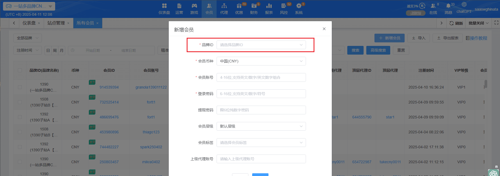
五、站点账单
1、模块说明：罗列展示每月账单，并将站点历史数据一并展示，无时间限制。
(1)、每月账单：每月产生的账单
(2)、一次性费用：当月若有一次性费用产生，则筛选后罗列于此
上述这两种类型无法同窗展示，须各自搜索
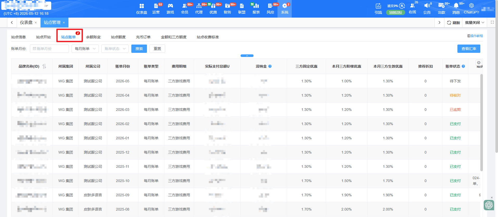
(3)、汇率查看：当前各币别换算成USDT的比例
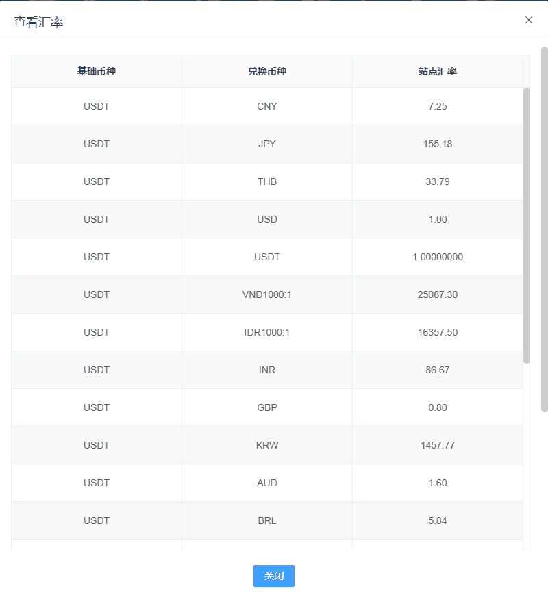
2、账单状态说明：账单共有7个状态，待下发、待核对、待支付、存在异议、已逾期、已坏帐、已支付
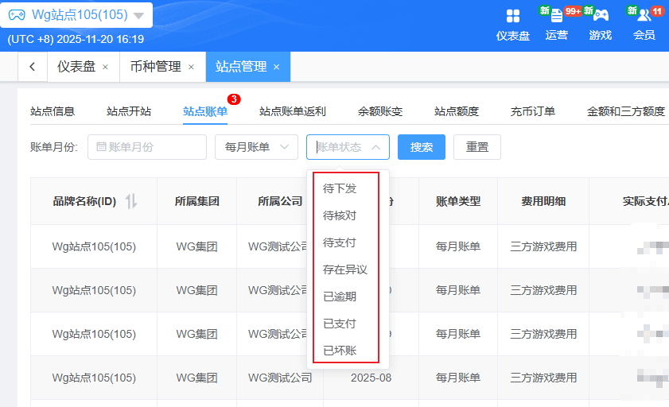
待下发：账单为本月账单，或上月账单于本月月初6号00:00:00之前，状态皆为待下发，因三方有部份数据待结算，故状态仍在待下发时数据仍会存在较多的异动
待核对：账单下发完成后，于每月月初6号00:00:00之后，则状态自动变更为待核对，此时站点可确认月账单是否正确，若正确可点击直接确认无误，则账单状态可变更为待支付。账单将由15天后自动变更状态为待支付。
待支付：账单为待支付时，点击支付后可支付该月账单。当站点余额充足时，确认支付按钮是可以点击的。当站点余额不足时，则展示 "主站余额不足，请先充值" ，并且确认支付按钮置灰，无法点击，须先充值后才能支付账单。账单将由30天后自动变更状态为已逾期。
V6.1更新：
1. 新增充币功能与实时刷新按钮：本次新增将站点余额实时刷新的按钮，以及可直接在支付站点账单页面充币
2. 支付页面排版更新：将支付页面排版更加直观，明确了解实际需要支付的账单总额
3. 支付逻辑新增：添加支付时判断站点余额是否充足，若不足够时会直接跳转充值页面，便利站长充值站点余额并支付账单
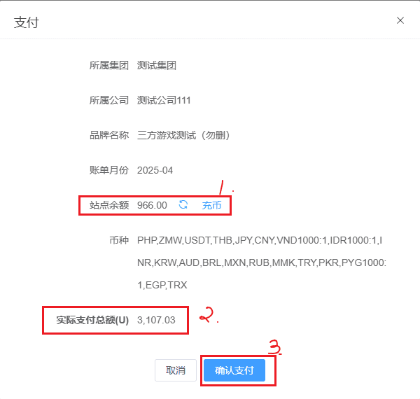
V6.5更新：
新增滞纳金字段。当月账单超过次月月底视为逾期，逾期每多1天则加收账单总额0.05%/天，上不封顶。
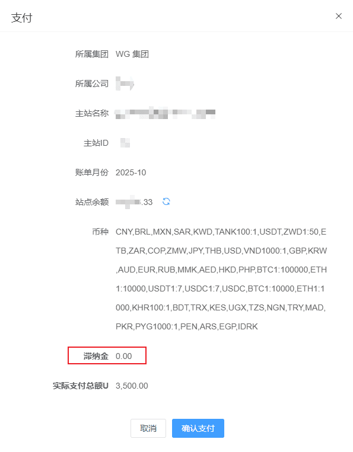
存在异议：当站点状态为存在异议时，状态变更是由站点已和财务沟通过后，确认有部份争议，由财务手动调整的。待线下沟通完成后由财务手动重新下发账单，或是审核后账单状态变更为待支付。账单将由15天后自动变更回待支付。
已逾期：当站点状态为已逾期时，则不享有任何优惠。
已支付：已支付完成的账单数据
已坏账：由财务变更的状态
3、详情页面简介：
顶部：为站点各个费用详情说明并展示
CDN流量费：该字段为CDN纯流量费用，CDN上限值=当月游戏账单*10%，超出自动免除；解析数/节点等级等资源名额不参予封顶。如未达上限值则以当前CDN流量费计算。
其他费用：CDN（解析数+节点+IP）、埋点归因费用、极光费用、CPF验证费、KYC验证费
费用调整：数据来源:由财务每月5号前人工导入模板生成
账单合计：游戏账单+CDN流量费+线路维护费+其他费用+费用调整
推荐折扣：按总计的金额计算推荐折扣
实际需支付总额U：账单合计 + 推荐折扣
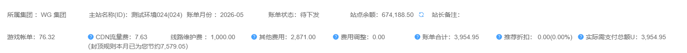
表格字段说明：
品牌名称(ID)：包含当前品牌的名称以及ID涵盖子品牌的名称与ID（如有子品牌的话，账单数据会一同展示于此）
账单月份：该站点账单历史的月份
币种：该站点所有的币种
游戏类型：三方游戏平台的类型
厂商名称(ID)：三方游戏平台与ID
投注金额：用户的投注金额汇总
有效投注：用户的有效投注汇总
盈亏金额：用户的输赢金额汇总
抽佣比例：可参照站点收费标准（原厂商收费比例）---V6.1修改
账单金额：盈亏金额*抽佣比例
厂商专属优惠：特殊的优惠，目前暂未使用，字段保留（原厂商优惠）---V6.1修改
优惠后比例：抽佣比例-厂商专属优惠
抽佣金额：账单金额*厂商专属优惠---V6.1新增
折算汇率：请参考前面的查看汇率
游戏帐单U：抽佣金额*折算汇率
状态：正常 / 异常（由财务手动变更）
4、其他补充更新：
a. 站点账单操作项，添加自定义按钮，可自行调整界面字段展示。
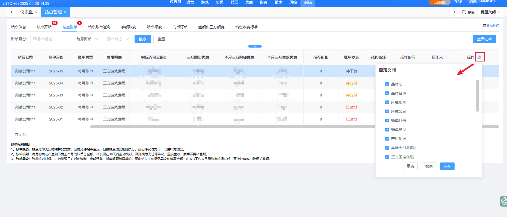
六、余额账变
（1）功能说明：主要用于记录站点余额的账变记录
（2）搜索说明：可根据单一条件或组合查询对应的帐变记录（仅支持精准搜索）
（3）账变时间：默认查询时间范围24小时，可根据需求自定义查询时间
（4）编号：输入账变记录的编号进行查询
（5）账变类型：选择对应的类型进行查询，默认为全部类型
（6）账变细项：选择对应的细项进行查询，默认为全部细项
（7）交易对象：选择对应的对象进行查询，默认为全部对象
（8）导出报表：针对会员的全部账变记录导出excel
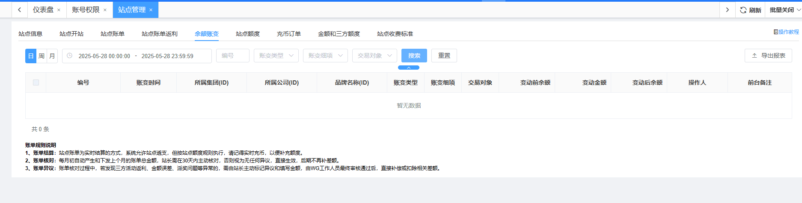
字段说明：
1、编号：每笔账变记录系统自动生成的19位数唯一验证编号
2、账变时间：账变记录产生的时间记录
3、所属集团(ID)：当前站长所属的集团
4、所属公司(ID)：当前站长所属的公司
5、品牌名称(ID)：当前站长所属的主站点
6、账变类型：账变记录的大类型，共计4大类（账单、集团管理、公司管理、站点管理）
7、账变细项：账变记录大类中包含的小类，共计7个小类（人工增加、人工扣除、充币、转入、转出、站点账单、马甲包账单）
8、交易对象：账变发生所对应的对象，共4个（系统、集团、公司、站点）
9、变动前余额：该条账变记录产生之前的站点账户余额
10、变动金额：该条账变记录产生时，变动的金额数
11、变动后余额：该条账变记录产生之后的站点账户余额
12、操作人：后台管理员操作之后的日志记录操作人账号
13、前台备注：后台页面操作的备注信息
七、站点额度
（1）功能说明：该模块为站点额度页面，展示当前站点所属集团/公司以及站点可用额度、站点余额、最大透支额、未结账单、站点状态信息；
（2）页面说明：可简单对我们站点额度进行观察和操作
（3）站点额度状态：暂分5种，以下是状态说明
- 1、站点额度和概念说明
- （1）站点余额：即当前站点的USDT余额，金额≥0，充币多少即为多少；购买马甲包、开通极光等，都将直接扣除站点余额；记得及时充币哦，以免影响站点使用，甚至被冻结。
- （2）授信额度：即WG授权给贵站点的授信额度，默认实际透支额度2倍，显示为正数，用于预支本月账单，具体额度一般为站点上月账单的金额，且最小值为10,000USDT；例如：10,000USDT，代表您最大可以透支20,000USDT。
- （3）未结账单：是指本月三方游戏已消费但未到月底结算期（即未生成月度账单），以及上月已生成账单但未全额缴纳。
- （4）可用额度：由站点余额、授信额度和未结账单组成，可为负数，直接影响站点状态，非常重要； 计算公式：可用额度 = 站点余额 + 授信额度 -未结账单。
- （5）透支比例：即未结账单减去站点余额后，再除以授信额度的百分比； 计算公式为：透支比例 =（未结账单-站点余额）÷ 授信额度 x 100%。
- 2、站点状态说明
- （1）正常：透支比例≤50%时，站点状态为正常，无任何功能限制和提醒，进度条为绿色；只有超级管理员和持有人每次登录都将收到充币的弹窗提醒。
- （2）预警：50%＜透支比例≤100%时，站点状态为预警，无任何功能限制，所有后台账号每次登录时都将收到充币的弹窗提醒，进度条为橙色。
- （3）限制导出：100%＜透支比例≤150%时，站点状态为限制导出，后台将无法导出会员资料，所有后台账号每间隔10分钟都将收到一次充币的弹窗提醒，进度条为红色。
- （4）限制游戏：150%＜透支比例≤200%时，站点状态为限制游戏，新会员都无法进入三方游戏，后台无法导出会员资料，所有后台账号每间隔5分钟都将收到一次充币的弹窗提醒，进度条为深红色。
- （5）禁止游戏：透支比例＞200%时，所有会员都无法进入游戏，已进入的将强制踢回到大厅，后台无法导出会员资料，进度条为深红色。
- 3、额度调整：根据您站点日充值金额，请联系主动联系商务人员上调。
八、充币订单
（1）功能说明：主要用于记录站点的充币记录
（2）搜索说明：可根据单一条件或组合查询对应的充币记录
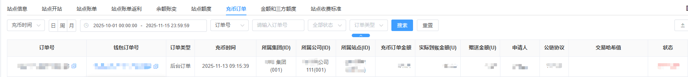
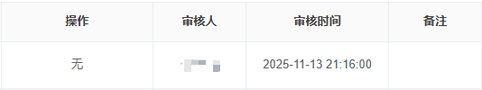
字段说明：
1、订单号：每笔充币订单系统自动生成的19位数唯一验证编号
2、钱包订单号：每笔充币订单在钱包系统中生成的20位数唯一验证编号
3、充币时间：充币订单产生的时间记录
4、所属集团：当前业主所属的集团
5、所属公司：当前业主所属的公司
6、所属站点：当前业主所属的站点
7、充币订单金额：展示当前订单的金额
8、实际到账金额：展示当前充币实际到账金额
9、赠送金额：展示当前充币订单所赠送的金额
10、申请人：进行充币操作的后台账号
11、公链协议：展示当前充币交易所对应的公链协议
12、充币地址：展示当前充币订单对应的充币地址，点击后可跳转至当前充币订单详情页
13、区块链ID：展示当前充币订单对应的区块链ID，点击后可跳转至区块浏览器查看当前交易详情
14、状态：展示当前充币订单的状态，共4种（待支付、支付成功、支付失败、支付超时）
15、审核人：对当前充币订单进行审核的后台账号
16、审核时间：审核当前充币订单的时间
17、后台备注：后台页面操作的备注信息
九、金额和三方额度
- 金额和三方额度限制说明：
- 1、充值单笔最大：是指您站点会员单笔充值的最大限额和后台充值补单、创建补单的单笔最大限额，若存在大额充值请分笔处理；
- 2、手动加款单笔最大：是指您通过站点后台给会员手动加款的单笔最大限额，请不要一次性加太多金额，否则不仅会触发风控，也可能产生不必要的账单；
- 3、会员优惠赠送单笔最大：是指用户手动领取的单笔金额、后台手动派发的单笔金额不超过单笔最大限额；
- 4、会员带入第三方游戏上限：是指前端单个会员进入三方游戏时，可以带入三方的最大金额限制，超出限额部分将自动留在大厅；以免恶意带入三方套刷账单。
- 5、会员大额带入三方预警：是指前端单个会员进入三方游戏时，超过会员带入第三方游戏上限的80%，将以讯息推播的方式至站点后台，提示站长关注大额会员；（V7.6新功能）
- 6、配置中说明：当前站点状态为配置中，则进入第三方游戏会单笔限制约20U（即非正式上线仅限小量测试），通知商务或技术支持申请正式上线后，将自动上调为单笔约10万U（已满足大部分玩家需求）。
- 7、申请大额上调（即单笔超10万人民币）：为防止恶意、自伤、跑单现象，只有站点日在线充值超过10万USDT或缴纳50000USDT押金才能申请上调（一般不建议上调，以免操作失误或内鬼盗取造成重大损失），若符合以上条件才能找商务或技术支持申请大额上调！
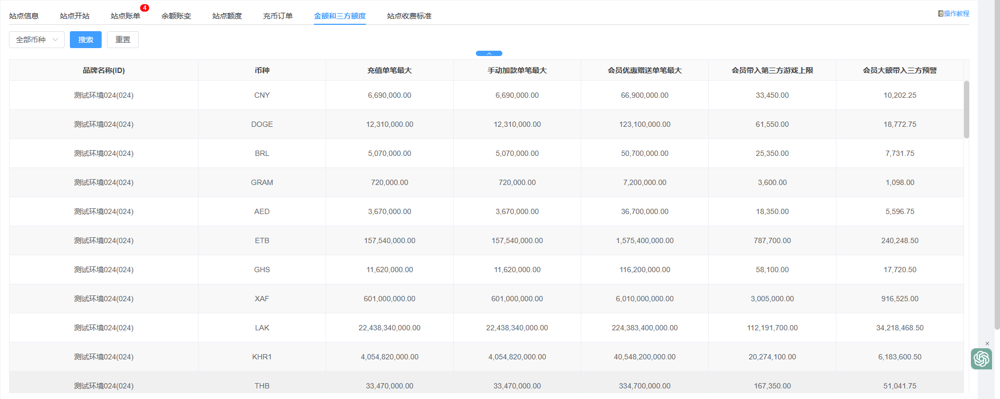
十、站点收费标准
字段说明：
1、游戏类型：对应游戏平台的类型。当前类型包含有：（棋牌、捕鱼、电子、真人、体育、斗鸡、电竞、彩票、区块链、房间局）
2、平台名称：游戏平台的名称
3、币种：游戏平台的币别
4、官网费率：公开透明固定的费率
5、三方固定优惠：固定的优惠
6、本月三方阶梯优惠：按上个月账单，等比例计算的优惠，账单越多优惠越多
7、本月三方生效优惠：将三方固定优惠与本月三方阶梯优惠取最大值
8、您的费率(%)：官网费率 - 本月三方生效优惠
V6.1更新：
1. 新增主站点补充说明
2. 新增站点收费标准导出字段
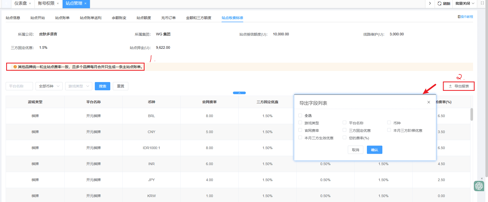